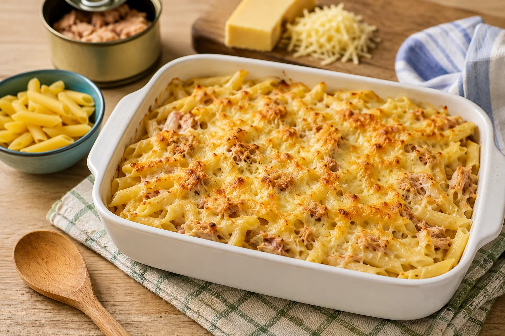
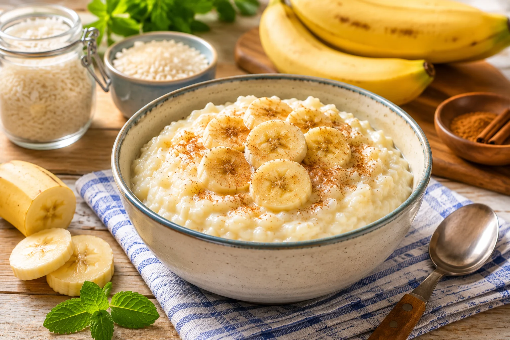
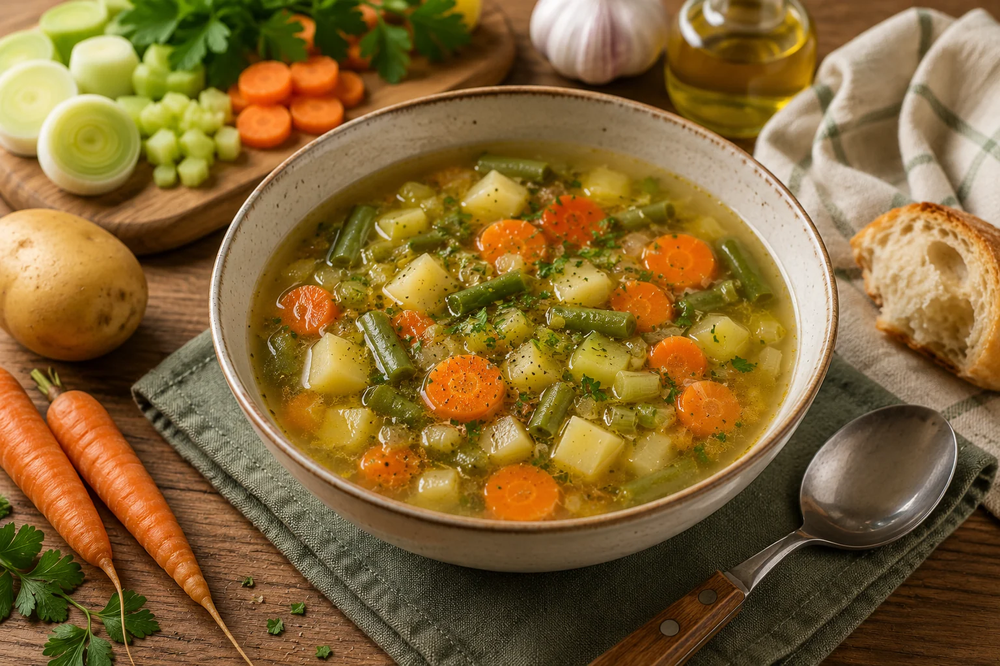

⭐ Recette de la semaine
Cette page calcule automatiquement la semaine en cours et affiche la sélection correspondante. Si aucune sélection n’est programmée, une rotation automatique prend le relais.
Calcul de la semaine en cours…
📅 Affichage par mois
Utilisez les listes déroulantes pour voir les sélections semaine par semaine sur un mois complet.

